Milestone 1
3 Ideas
For milestone 1, we first came up with three big lists of various words. We had situations, groups , and modes of communication. We then mixed and matched various words and ideas till we got onto some interesting spaces. We then choose the top thirty ideas we had from our own generated ideas. We were then sad to have to sift through these 30 good ideas and choose these top three.
We targeted musicians (namely, people who create and/or play music) who may want feedback on their music from other people. Music has a lot of potential for critique as it has multiple elements that make it "good": musicality, technique, style, composition, etc. We see this happening among friends who do music together and new DJs posting their things online and soliciting feedback, but it's not modulated and the resources are limited. Furthermore, many elements of music are subjective, and thus having multiple perspectives of feedback would be beneficial for the musician to consider and incorporate into their own style. It would be very helpful for musicians to be able to receive critique from a wide range of people who may have different specialties that they would not have access to otherwise. To encourage more honest critiquing, we added the dimension of anonymity, which would hopefully take down barriers of potential reviewers thinking their critique was dumb; we could also see this backfiring (i.e. people bashing each other non-constructively), so more in-depth need finding and user testing is necessary. The context in which this tool could be used is either as a budding musician who does not have the wide range or resources necessary to develop their potential, or as a more experienced musician who may want to share their knowledge with other musicians and expand their network.
We are interested in the support systems that already exist for people that need emotional support. Some of these systems are Alcoholics Anymonous and group therapy to name the least. Our target group really is those in need of a specific type of emotional help or support for others. These groups are always trying to find ways to communicate with each other about how they are going through their challenges and many times need each others support and help to get through the toughest of times. This is a really unique problem as many people, if not all people, enter in a stage in their life when they need a certain type of support from people who are also in need of that specific type of support.This need of support can be communicated in so many ways, allowing our idea to have a myraid of rich media aspects to choose from. Lastly, this idea also provides an app in a space not really targeted by the tech industry right now.
Our third project idea revolves around passing down stories, traditions, memories, and other bits of heritage across generations. Our target user group would be families with children and would address the parents' needs of sharing these things from their past with their children. This could be particularly interesting in immigrant families where the parents grew up in another country and so their children have a limited sense of their parents' own childhoods and how they grew up. Sharing stories orally is somewhat limited because memories include tastes, smells, and sights which can't be really conveyed in words. It seems like additional rich media could really give shared stories and memories a more transformative experience so kids can better understand what it was like in their parents' or grandparents' shoes. In a sense it would be great if there was some way to recreate at least the essence of the memory with different types of media.
Documentation
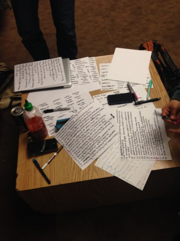
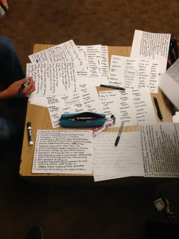
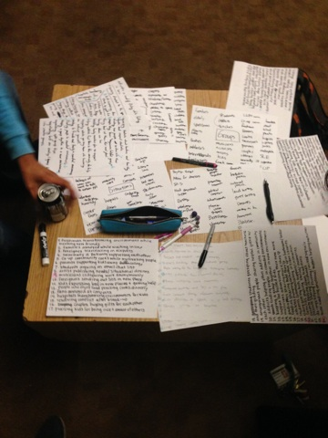
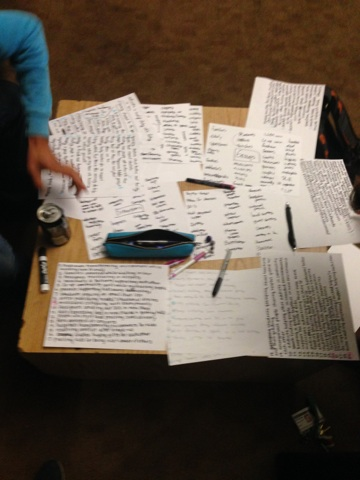
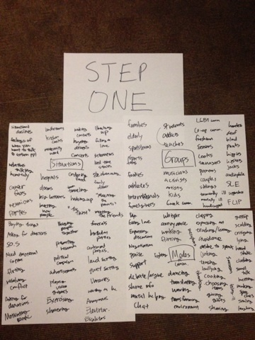

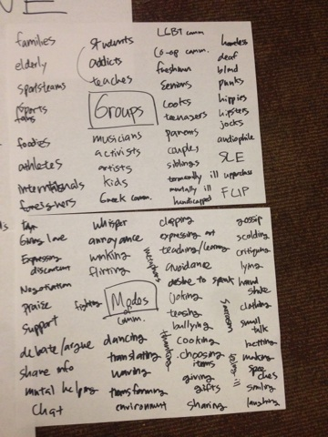
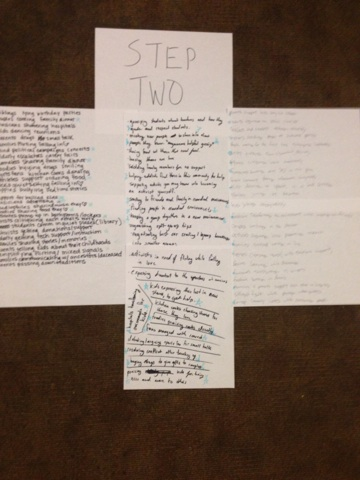
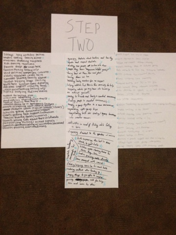

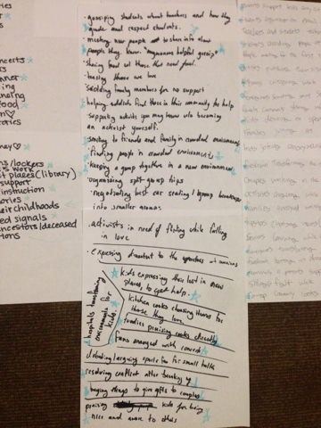
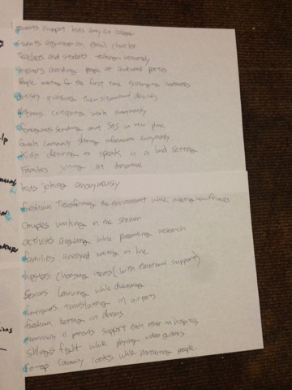
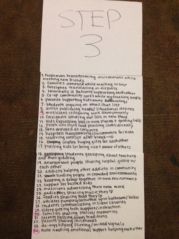